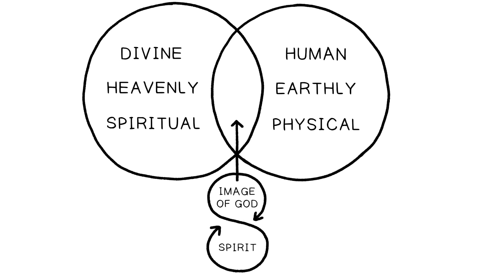
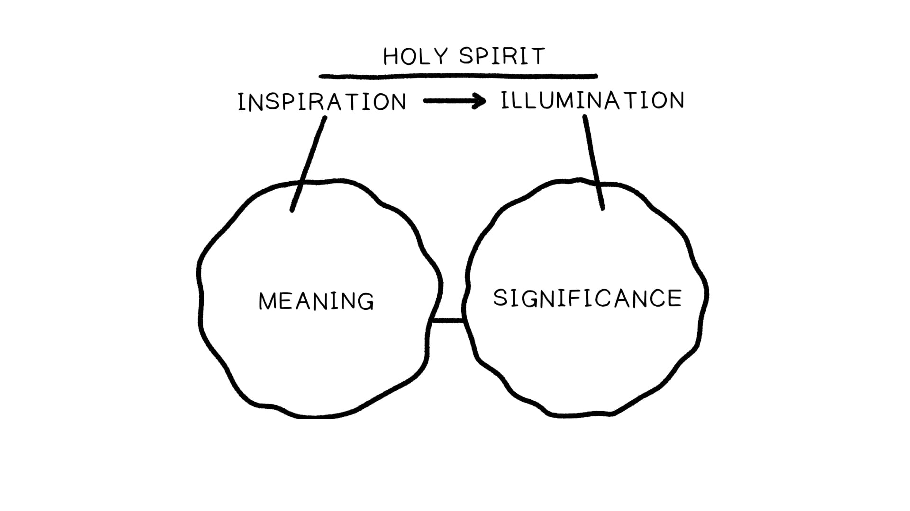

Somos convidados a imaginar o que parece um paradoxo que é bem ilustrado pela famosa imagem de M.C. Escher chamada “Desenhando Mãos” (1948).We are asked to imagine what seems like a paradox that is well illustrated by the famous image by M.C. Escher called “Drawing Hands” (1948).
As Escrituras afirmam ser o produto de uma parceria divino-humana. Ambas são necessárias, mas nenhuma sozinha é causa suficiente para explicar as origens e a natureza do texto bíblico. O envolvimento de Deus não diminui a dimensão humana. Dentro da história bíblica, o Espírito Santo aprimora e energiza os seres humanos para serem mais plenamente a imagem divina para a qual foram criados. A agência do Espírito de Deus não funciona às custas da agência humana. Em vez disso, os humanos se tornam mais humanos através da influência capacitadora do Espírito. Isso é verdade para todas as figuras capacitadas pelo Espírito na Bíblia (Moisés, Josué, Samuel, Davi, os profetas, os apóstolos, etc.).The Scriptures claim to be the product of a divine-human partnership. Both are necessary, but neither alone are sufficient causes to explain the origins and nature of the biblical text. God’s involvement does not diminish the human dimension. Within the biblical story, the Holy Spirit enhances and energizes human beings to be more fully the divine-image they were created to be. The agency of God’s Spirit does not work at the expense of human agency. Rather, humans become more human through the empowering influence of the Spirit. This is true of all the Spirit-empowered figures in the Bible (Moses, Joshua, Samuel, David, the prophets, the apostles, etc.).
Quando olhamos para as descrições bíblicas da escrita dos livros bíblicos, observe como a figura profética não está em transe, mas em plena posse de suas faculdades (veja Êx. 17:8-14; Jr. 36; Is. 8). Isso nos dá uma importante janela para a produção da literatura bíblica.When we look at biblical descriptions of the writing of biblical books, notice how the prophetic figure is not in a trance but is in full possession of their faculties (see Exod. 17:8-14; Jer. 36; Isa. 8). This gives us an important window into the production of biblical literature.
Nas ocasiões em que vemos profetas em um estado de consciência elevada, eles não estão escrevendo ou produzindo textos. Em vez disso, estão experimentando uma visão ou interpretando o significado de uma visão à luz de seu entendimento das Escrituras (Dn. 9-11; Ez. 1-3).On the occasions where we do see prophets in a state of elevated consciousness, they are not writing or producing texts. Instead, they are experiencing a vision or interpreting the meaning of a vision in light of their understanding of the Scriptures (Dan. 9-11; Ezek. 1-3).
Aprofunde-se no retrato do Espírito Santo na Bíblia Hebraica com estes livros.Dive deeper into the portrait of the Holy Spirit in the Hebrew Bible with these books.


Você ou aqueles em seu contexto tendem a ver os reinos espiritual e físico como muito distintos? Como você acha que isso afeta sua visão da inspiração das Escrituras?Do you or those in your context tend to view the spiritual and physical realms as very distinct? How do you think this affects your view of the inspiration of Scripture?